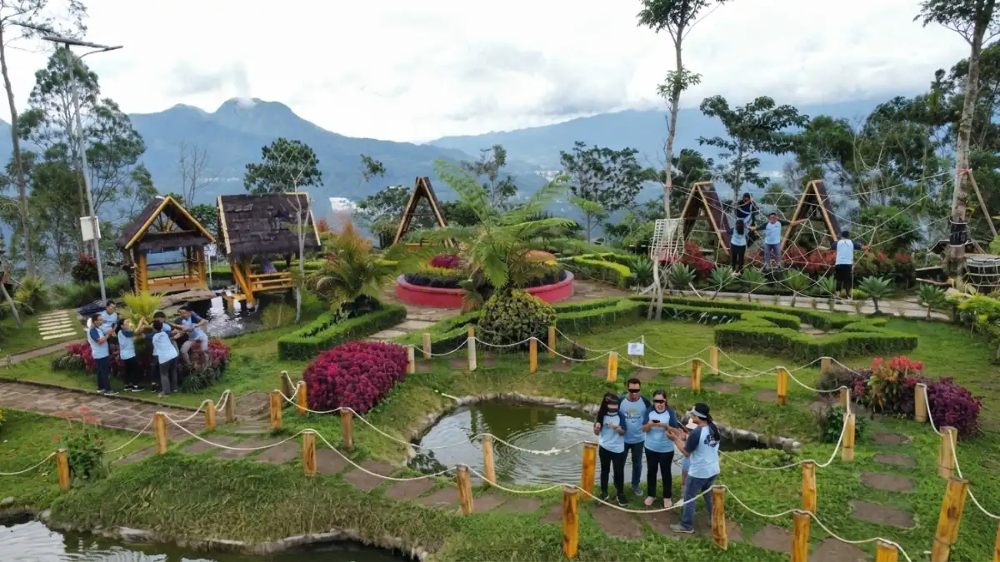
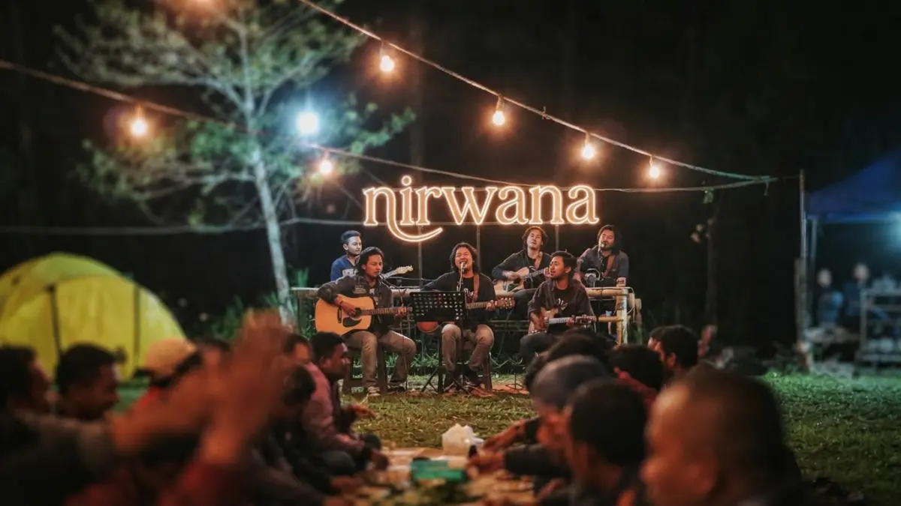

Ilustrasi kegiatan merancang gathering perusahaan dengan sesi briefing dan agrowisata di Bukit Nirwana Pujon.Merancang gathering perusahaan seharian di Bukit Nirwana Pujon bisa dilakukan dengan menyusun rundown yang memanfaatkan gazebo untuk briefing, spot foto untuk dokumentasi, agrowisata untuk team building ringan, dan panggung live music untuk sesi malam.
- Bagaimana Cara Merancang Rundown Gathering Seharian di Bukit Nirwana?
- Fasilitas Apa yang Bisa Dipakai untuk Sesi Briefing atau Kumpul Kelompok?
- Spot Foto Mana Saja yang Bisa Dipakai untuk Dokumentasi Acara Tim?
- Bagaimana Agrowisata Bisa Dijadikan Aktivitas Team Building Ringan?
- Bagaimana Merancang Sesi Malam Keakraban Jika Rombongan Menginap?
- Berapa Lama Waktu Ideal untuk Menjalankan Rundown Gathering di Bukit Nirwana?
- Kesimpulan
- FAQ
Bagaimana Cara Merancang Rundown Gathering Seharian di Bukit Nirwana?
Cara merancang rundown gathering seharian di Bukit Nirwana adalah dengan mengurutkan kegiatan dari sesi briefing di gazebo pada pagi hari, dilanjutkan aktivitas agrowisata atau dokumentasi foto pada siang hari, lalu diakhiri sesi santai malam hari jika rombongan menginap.
Karena seluruh fasilitas berada dalam satu kawasan yang dikelola langsung oleh pihak Bukit Nirwana, tim HRD tidak perlu mengoordinasikan banyak pihak berbeda untuk satu rangkaian acara.
Koordinasi cukup dilakukan langsung dengan pengelola untuk memastikan ketersediaan gazebo dan jadwal penggunaan panggung pada tanggal yang diinginkan.
Fasilitas Apa yang Bisa Dipakai untuk Sesi Briefing atau Kumpul Kelompok?
Fasilitas yang bisa dipakai untuk sesi briefing atau kumpul kelompok adalah gazebo luas dan area duduk privat yang tersebar di beberapa titik kawasan Bukit Nirwana.
Ketersediaan gazebo dalam jumlah cukup memudahkan tim HRD membagi rombongan besar menjadi kelompok kecil untuk diskusi atau sesi pembukaan acara.
Area duduk privat juga bisa dimanfaatkan untuk sesi khusus, misalnya arahan dari pimpinan sebelum aktivitas utama dimulai, tanpa terganggu rombongan lain di sekitarnya.
Spot Foto Mana Saja yang Bisa Dipakai untuk Dokumentasi Acara Tim?
Spot foto yang bisa dipakai untuk dokumentasi acara tim meliputi taman bunga, kincir angin bergaya Eropa, gardu pandang, dan perahu bambu, dan semuanya bisa diakses gratis cukup dengan membayar HTM Rp10.000 per orang.
Taman bunga menampilkan warna cerah dari bunga matahari, mawar, dan celosia yang menjadi latar favorit untuk dokumentasi tim.
Sesi foto sebaiknya dijadwalkan pada waktu yang sama untuk seluruh peserta agar hasil dokumentasi terlihat rapi dan konsisten sebagai satu rangkaian acara resmi perusahaan.
| Spot Foto | Biaya Tambahan |
|---|---|
| Taman bunga | Gratis dengan HTM |
| Kincir angin | Gratis dengan HTM |
| Gardu pandang | Gratis dengan HTM |
| Perahu bambu | Gratis dengan HTM |
Bagaimana Agrowisata Bisa Dijadikan Aktivitas Team Building Ringan?
Agrowisata bisa dijadikan aktivitas team building ringan dengan mengajak peserta memetik sayuran segar seperti tomat dan cabai, serta buah apel, secara bersama-sama di area kebun sebagai variasi kegiatan yang lebih santai dibanding sesi diskusi formal.
Aktivitas ini biasa dijadwalkan pada pagi hari sebelum sesi kumpul utama dimulai.
Proses memilih dan mengumpulkan hasil kebun secara berkelompok melatih koordinasi sederhana antar peserta, sekaligus memberi mereka suvenir oleh-oleh alami untuk dibawa pulang ke kota.

Ilustrasi panggung live music untuk sesi malam keakraban di Bukit Nirwana.Bagaimana Merancang Sesi Malam Keakraban Jika Rombongan Menginap?
Cara merancang sesi malam keakraban jika rombongan menginap adalah dengan memanfaatkan panggung live music dan lampu-lampu gantung estetik yang disediakan pengelola melalui fasilitas Nirwana Camp.
Berdasarkan wawancara Marketing Bukit Nirwana, Bowo Ari, dengan Kompas.com pada Juli 2020, fasilitas ini memang dirancang agar peserta nyaman berlama-lama di luar tenda saat malam tiba.
Suasana informal seperti ini efektif mencairkan batas hierarki, membuat karyawan dari berbagai divisi lebih mudah mengobrol santai sambil menikmati udara malam pegunungan.
Berapa Lama Waktu Ideal untuk Menjalankan Rundown Gathering di Bukit Nirwana?
Waktu ideal untuk menjalankan rundown gathering di Bukit Nirwana berkisar satu hari penuh dari pagi hingga sore untuk acara tanpa menginap, atau diperpanjang hingga malam bila rombongan mengambil paket Nirwana Camp.
Rombongan yang hanya mengambil program sehari biasanya cukup mengisi waktu dengan sesi briefing, agrowisata, dan dokumentasi foto sebelum jam operasional tutup pukul 19.00 WIB.
Sementara rombongan yang menginap dapat melanjutkan rangkaian acara hingga sesi live music malam hari.
Gathering perusahaan di Bukit Nirwana bisa dirancang secara utuh dari pagi hingga malam dengan memanfaatkan fasilitas yang sudah tersedia dalam satu kawasan, mulai dari gazebo, spot foto, agrowisata, hingga panggung live music.
Tim HRD sebaiknya menyusun rundown sejak awal dan berkoordinasi langsung dengan pengelola agar seluruh fasilitas termanfaatkan maksimal sesuai jumlah peserta dan durasi acara.
Kesimpulan
Bukit Nirwana Pujon merupakan pilihan lokasi ideal dan praktis untuk menyelenggarakan gathering perusahaan.
Semua fasilitas yang dibutuhkan tersedia lengkap dalam satu kawasan terpadu mulai dari gazebo untuk briefing, agrowisata untuk team building, hingga spot foto untuk dokumentasi tim.
Dengan merencanakan rundown secara matang dan mengambil paket menginap di Nirwana Camp, tim HRD juga bisa menyelenggarakan sesi keakraban malam hari dengan hiburan live music yang membuat karyawan semakin solid.
FAQ